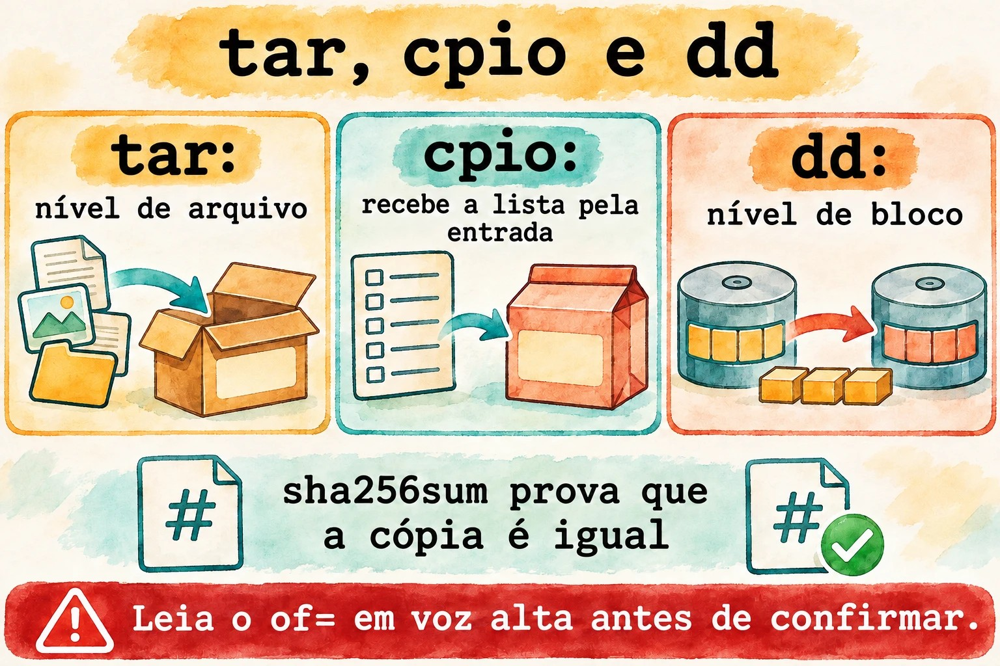
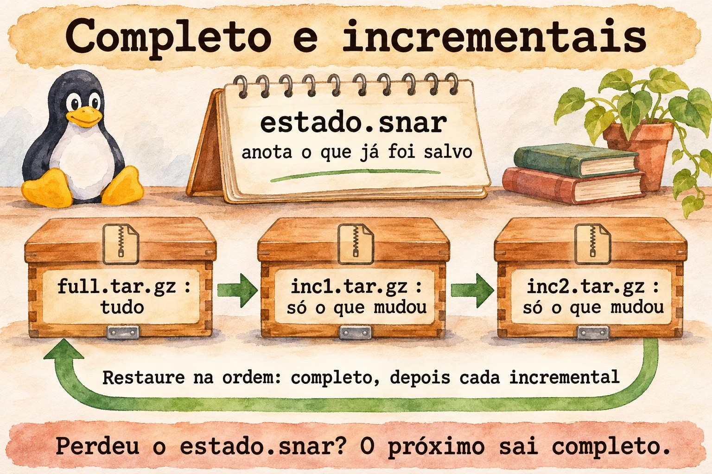
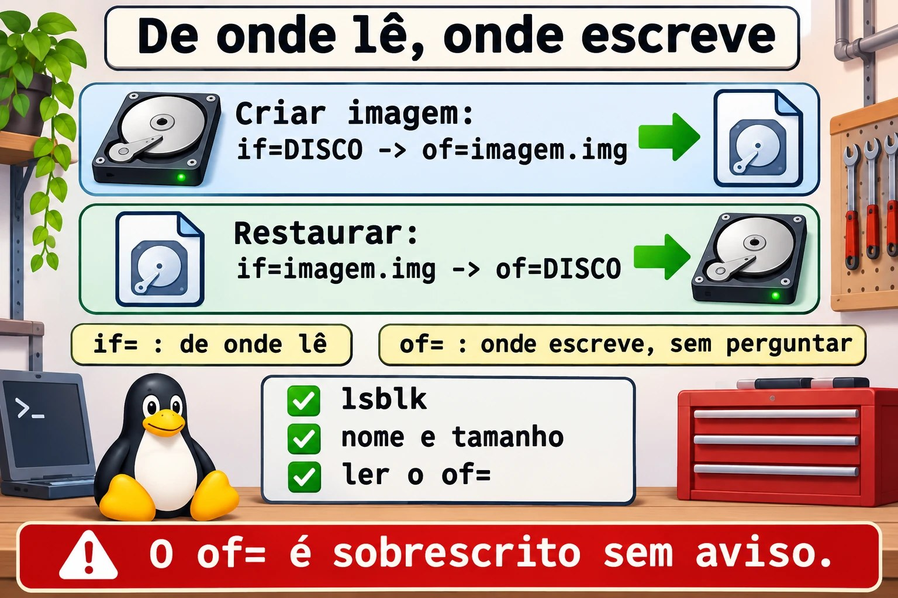

Aula 8.3 · Arquivamento avançado
Na aula 1.7 você aprendeu a criar um tar e a extraí-lo. Agora a pergunta muda: o que entra, o que fica de fora, o que preserva permissões e como provar que a cópia está íntegra. Nesta aula você também usa o dd, que copia um disco inteiro e que, com uma letra errada, apaga um disco inteiro.
Núcleo desta aula: selecionar com
--excludee-T; extrair onde quiser com-Ce--strip-components; comparar comtar -d; reconhecercpio; criar uma imagem de disco comdd; provar a integridade comsha256sum. O resto é aprofundamento.
| Ficha | |
|---|---|
| Módulo | M8 · Arquivos a fundo, aula 3 de 5 |
| Quando | Semana 12 |
| Ao final | Você escolhe o que copiar, preserva o que importa e prova que a cópia está íntegra |
| Pré-requisitos | Aulas 1.7 e 8.2 |
| Tempo | cerca de 2h |
| Snapshots | m8a3-inicio e m8a3-fim na rocky-lab e na debian-lab |
1 · Aquecimento
Responda antes de ler.
- O que significam
ifeofnodd? O que acontece se você trocar os dois? - Um
tar.gzextraiu sem erro. Isso garante que ele é igual ao original? - O
tar, por padrão, grava ACL e contexto SELinux?
2 · Por que importa
| O chamado | A resposta errada | O que ela causa |
|---|---|---|
| "O backup do site tem 40 GB de cache" | Comprar mais disco | Bastava excluir cache/ |
| "Restaurei e o serviço não sobe" | Reinstalar | Faltaram ACL e contextos: o tar padrão não grava |
| "Clonei o disco com a VM ligada e não boota" | Clonar de novo | Imagem de disco montado sai inconsistente |
"Rodei o dd e o disco sumiu" | Tentar de novo | if e of invertidos. Só o backup resolve |
| "A cópia chegou, mas está estranha" | Confiar no tamanho | Só o checksum prova a igualdade |
3 · Modelo mental
O
taré uma caixa de mudança: você escolhe o que entra e etiqueta cada objeto com dono e permissões. Ocpioé a mesma caixa, em que a lista é entregue por outra pessoa: ele lê os nomes da entrada padrão. Oddé uma fotocopiadora de folhas: não sabe o que é arquivo, só copia bloco por bloco, de uma origem a um destino. Osha256sumé o lacre: se mudar um único bit, o lacre não confere.
tar nível de arquivo entende nomes, donos, datas escolhe o que entra
cpio nível de arquivo recebe a lista pela entrada find | cpio -o
dd nível de bloco não entende nada, copia tudo disco inteiro
dd if=ORIGEM of=DESTINO bs=4M
in file out file
↑ ↑
só leitura será SOBRESCRITO

dd, leia o of= em voz alta.Ponte Windows
| No Windows | No Linux | Onde a comparação engana |
|---|---|---|
7-Zip, Compress-Archive | tar com compressão | O tar guarda dono, permissão e link |
robocopy /XD /XF | tar --exclude | No tar, a posição da opção importa |
robocopy /COPYALL | tar --acls --xattrs --selinux | Sem as opções, as permissões estendidas se perdem |
| Backup de imagem, Clonezilla | dd | O dd não sabe o que é espaço livre: copia tudo |
Get-FileHash, certutil -hashfile | sha256sum | Igual, mas com -c confere uma lista |
4 · O essencial
tar: seleção e destino
| Quero... | Forma |
|---|---|
| Excluir | tar -czf x.tar.gz --exclude='cache' --exclude='*.log' pasta |
| Lista de arquivos | tar -czf x.tar.gz -T lista.txt |
| Lista com nomes seguros | find ... -print0 | tar -czf x.tar.gz --null -T - |
| Entrar numa pasta antes | tar -czf x.tar.gz -C /etc ssh |
| Extrair em outro lugar | tar -xzf x.tar.gz -C destino |
| Tirar o primeiro nível | tar -xzf x.tar.gz --strip-components=1 |
| Extrair só um item | tar -xzf x.tar.gz caminho/arquivo |
| Comparar com o disco | tar -dzf x.tar.gz |
| Incremental | tar -czf inc.tar.gz -g estado.snar pasta |
O que preservar
| Quero... | Opção |
|---|---|
| Permissões ao extrair | -p (padrão para root) |
| ACL | --acls |
| Atributos estendidos | --xattrs |
| Contexto SELinux | --selinux |
| Dono numérico | --numeric-owner |
Na Rocky, depois de restaurar em /etc, rode sudo restorecon -Rv /etc/CAMINHO.
cpio
| Quero... | Comando |
|---|---|
| Criar | find pasta -print0 | cpio -o0 -H newc > x.cpio |
| Listar | cpio -tv < x.cpio |
| Extrair | cpio -idmv < x.cpio |
Você o encontra em dois lugares: no initramfs e dentro de pacotes RPM.
dd
| Quero... | Comando |
|---|---|
| Imagem | sudo dd if=DISCO of=imagem.img bs=4M status=progress conv=fsync |
| Restaurar | sudo dd if=imagem.img of=DISCO bs=4M status=progress conv=fsync |
| Com compressão | sudo dd if=DISCO bs=4M | gzip > imagem.img.gz |
| Trocar pedaço de um arquivo | dd ... conv=notrunc |
Lacre
| Quero... | Comando |
|---|---|
| Calcular | sha256sum arquivo > arquivo.sha256 |
| Conferir | sha256sum -c arquivo.sha256 |
Rocky × Debian
| Rocky | Debian | |
|---|---|---|
tar e dd | Iguais | Iguais |
cpio | dnf install cpio | apt install cpio |
| Ver o initramfs | lsinitrd | lsinitramfs |
5 · Lab guiado
Passo 0 · Snapshots e preparo. No Proxmox: qm snapshot 201 m8a3-inicio e qm snapshot 202 m8a3-inicio. Na rocky-lab:
sudo dnf install -y tar cpio
mkdir -p ~/lab83/site/{html,cache,logs} && cd ~/lab83
echo pagina > site/html/index.html
echo lixo > site/cache/x.tmp
echo acesso > site/logs/acesso.logPasso 1 · Selecionar.
tar -czf sem-cache.tar.gz --exclude='site/cache' --exclude='*.log' site
tar -tzf sem-cache.tar.gz
find site -type f -name '*.html' -print0 > lista.bin
tar -czf so-html.tar.gz --null -T lista.bin
tar -tzf so-html.tar.gzPasso 2 · Extrair onde quiser.
mkdir destino
tar -xzf sem-cache.tar.gz -C destino --strip-components=1
find destinoO --strip-components=1 tirou o site/ do caminho.
Passo 3 · Comparar com o disco.
tar -dzf sem-cache.tar.gz; echo "saida=$?"
echo mudou >> site/html/index.html
tar -dzf sem-cache.tar.gz; echo "saida=$?"Na segunda vez aparece Mod time differs e Size differs, com saída 1. Serve para responder "o que mudou desde o backup".
Passo 4 · Incremental.
tar -czf full.tar.gz -g estado.snar site
echo nova > site/html/nova.html
tar -czf inc1.tar.gz -g estado.snar site
tar -tzf inc1.tar.gz
mkdir restaura
tar -xzf full.tar.gz -g /dev/null -C restaura
tar -xzf inc1.tar.gz -g /dev/null -C restaura
find restaura -name '*.html'O incremental guarda só o que mudou. Restaura-se na ordem: completo, depois cada incremental. O estado.snar é alterado a cada execução: se ele se perder, o próximo volta a ser completo.


Passo 5 · cpio e o initramfs.
find site -print0 | cpio -o0 -H newc > site.cpio
cpio -tv < site.cpio | head -n 5
mkdir viacpio && cd viacpio
cpio -idmv < ../site.cpio
cd ..
sudo lsinitrd /boot/initramfs-$(uname -r).img | head -n 25O arquivo que o kernel usa no boot é um cpio compactado.
Passo 6 · Um disco de laboratório. Um arquivo faz o papel de disco, então nada real corre risco.
truncate -s 64M disco.img
L=$(sudo losetup --find --show disco.img)
echo $L
sudo mkfs.ext4 -q $L
sudo mkdir -p /mnt/lab83
sudo mount $L /mnt/lab83
echo 'dado importante' | sudo tee /mnt/lab83/nota.txt
sudo umount /mnt/lab83Passo 7 · Imagem e lacre. Com o disco desmontado:
sudo dd if=$L of=imagem.img bs=1M status=progress conv=fsync
sudo chown $USER: imagem.img
sudo sha256sum $L imagem.img
sha256sum imagem.img > imagem.sha256
sha256sum -c imagem.sha256Os dois hashes são iguais.
Passo 8 · Desastre e volta. Só no disco do lab, confirme que $L é /dev/loop.
echo $L
sudo dd if=/dev/zero of=$L bs=1M count=8 conv=fsync status=none
sudo mount $L /mnt/lab83
sudo dd if=imagem.img of=$L bs=1M status=progress conv=fsync
sudo mount $L /mnt/lab83
cat /mnt/lab83/nota.txt
sudo umount /mnt/lab83O primeiro mount falha, porque o início do sistema de arquivos foi zerado. Depois da restauração, a nota volta.
Passo 9 · debian-lab. Instale cpio e repita os passos 1, 2 e 5, trocando o último comando por lsinitramfs /boot/initrd.img-$(uname -r) | head -n 25.
Decida 1
Preciso de uma cópia do disco de um servidor de banco em produção. Como?
A) dd com tudo ligado. B) Backup pelo mecanismo do hipervisor ou do banco, ou dd a partir de um sistema em que o disco não esteja montado. C) cp -r /.
Marque uma opção antes.
| Se você marcou | Resultado | Por quê |
|---|---|---|
| A | Imagem inconsistente | Os blocos mudam enquanto o dd copia |
| B | Certo | Num Proxmox, o vzdump e o PBS fazem isso. Em bare metal, inicie por uma mídia de recuperação |
| C | Errado | Entra em /proc e /sys, e perde links e metadados |
Para fixar: dd só com o disco parado.
Decida 2
Backup de /etc/ssh na Rocky, para restaurar depois na mesma máquina. Qual comando?
A) tar -czf x.tar.gz /etc/ssh. B) sudo tar --acls --xattrs --selinux -czpf x.tar.gz -C / etc/ssh. C) cp -r /etc/ssh ~/.
Marque uma opção antes.
| Se você marcou | Resultado | Por quê |
|---|---|---|
| A | Incompleto | Sem root nem lê as chaves, e não guarda o SELinux |
| B | Certo | Preserva tudo, com caminho relativo. Depois, restorecon |
| C | Ruim | Perde dono, permissão e contexto |
Para fixar: saiba o que o seu backup não guarda.
6 · Quebre e conserte
Quebra 1 · O exclude que não excluiu
cd ~/lab83
tar -czf errado.tar.gz site --exclude='*.log'
tar -tzf errado.tar.gz | grep logSintoma: o acesso.log está dentro, e o tar avisa sobre opções usadas depois dos nomes.
Diagnóstico: o --exclude vale para o que vem depois dele.
Conserto: coloque antes do caminho, como no Passo 1. Confira sempre com tar -t.
Quebra 2 · O dd que encurtou o arquivo
cp imagem.img copia.img
ls -l copia.img
dd if=/dev/zero of=copia.img bs=1 count=1 seek=1000
ls -l copia.img
sha256sum imagem.img copia.imgSintoma: o arquivo ficou com 1001 bytes.
Diagnóstico: por padrão, o dd corta o destino quando é um arquivo.
Conserto: volte a cópia e use conv=notrunc:
cp imagem.img copia.img
printf 'X' | dd of=copia.img bs=1 seek=1000 conv=notrunc status=none
ls -l copia.img
sha256sum imagem.img copia.imgO tamanho se mantém, e o hash mudou por causa de um único byte.


Quebra 3 · if e of trocados (narrativa)
Numa madrugada, para salvar o disco, alguém digita dd if=/backup/imagem.img of=/dev/sda, achando que estava criando a imagem.
Sintoma: o sistema começa a dar erros, e nada mais inicia.
Diagnóstico: a origem e o destino estavam invertidos, e /dev/sda foi sobrescrito.
Conserto: não há comando que desfaça. Só a restauração de um backup ou snapshot. Antes de rodar: lsblk, conferir nome e tamanho, e ler o of=.
Limpeza
cd ~
sudo losetup -j ~/lab83/disco.img
sudo losetup -d "$(sudo losetup -j ~/lab83/disco.img | cut -d: -f1)"
sudo rmdir /mnt/lab83
rm -r ~/lab837 · Armadilhas
| Armadilha | O que acontece | Como evitar |
|---|---|---|
--exclude depois do caminho | Não exclui | Antes do caminho |
Caminho absoluto no tar | O tar tira a /, e extrai relativo | Use -C / ao criar |
Backup sem --acls e --selinux | Restaura sem metadados | Inclua as opções |
Perder o .snar | O incremental vira completo | Guarde junto com o backup |
dd em disco montado | Imagem inconsistente | Desmonte ou use snapshot |
Confundir /dev/sda e /dev/sdb | Apaga o disco errado | lsblk antes |
dd em arquivo sem notrunc | Corta o arquivo | conv=notrunc |
bs pequeno em disco grande | Extremamente lento | bs=4M |
| Confiar no tamanho | Não prova nada | sha256sum -c |
8 · Quiz
Responda sem olhar. O gabarito está no fim da aula.
- Por que o
--excludedepois do caminho não funciona? - O que faz o
--strip-components=1? - Em que ordem se restaura um backup incremental do
tar? - Como listar um
cpio? - Por que não usar
ddnum disco montado? - Como provar que a imagem é igual à origem?
9 · Cola
Para saber de cor:
| Quero... | Comando |
|---|---|
| Excluir | tar -czf x.tar.gz --exclude='PADRAO' pasta |
| Listar | tar -tzf x.tar.gz |
| Extrair em outro lugar | tar -xzf x.tar.gz -C destino |
| Comparar | tar -dzf x.tar.gz |
| Imagem | sudo dd if=ORIGEM of=imagem.img bs=4M status=progress conv=fsync |
| Lacre | sha256sum -c arquivo.sha256 |
Para consultar:
| Quero... | Comando |
|---|---|
| Preservar tudo | --acls --xattrs --selinux -p |
| Incremental | -g estado.snar |
| Lista segura | find ... -print0 | tar --null -T - -czf x.tar.gz |
| cpio | cpio -o0 -H newc, cpio -tv, cpio -idmv |
| Initramfs | lsinitrd, lsinitramfs |
| Dispositivo de arquivo | losetup --find --show, losetup -d |
Flashcards:
of=→ o destino, sobrescrito sem perguntar.tar,cpio,dd→ arquivo, lista e bloco.conv=notrunc→ não corta o destino.- Backup sem
--selinux→ contextos perdidos. - Prova de igualdade → hash.
10 · Checklist e fechamento
- [ ] Excluo do
tare confirmo com-t - [ ] Extraio no destino e removo níveis
- [ ] Faço backup completo e incremental
- [ ] Sei o que o
tarnão grava por padrão - [ ] Listo e extraio um
cpio - [ ] Faço imagem e restauro com
ddem um disco de lab - [ ] Provo a igualdade com hash
Último exercício, sem olhar a aula: na debian-lab, gere um tar.gz de /etc/ssh sem as chaves privadas (ssh_host_*_key), liste o conteúdo para provar e crie o arquivo .sha256 correspondente.
Snapshot de fim (no Proxmox):
qm snapshot 201 m8a3-fim
qm snapshot 202 m8a3-fim11 · Na vida real
Missão, só leitura. Num servidor Linux que você administre (ou com autorização), rode apenas:
lsblk -o NAME,SIZE,TYPE,MOUNTPOINTS
sudo find / -xdev -type f \( -name '*.tar.gz' -o -name '*.tgz' -o -name '*.img' \) -size +100M -lsNum arquivo tar encontrado, liste sem extrair:
tar -tzf ARQUIVO | head -n 20
tar -tzvf ARQUIVO | tail -n 3Perguntas para responder:
- Qual disco é o do sistema? Qual seria o
of=errado? - Existe imagem ou backup sem documentação?
- Esse arquivo foi testado alguma vez?
Diário: anote quem é o responsável por esse backup e quando ele foi testado.
Amanhã, sem olhar: escreva o comando dd para criar uma imagem de /dev/sdb, e diga o que precisa conferir antes.
12 · Aprofundar quando quiser
rpm2cpio pacote.rpm | cpio -idmv: extrair arquivos de um pacote sem instalar.ddrescue: copiar disco com defeito, tolerando erros.fsarchiver,partclone: copiam só os blocos em uso.resticeborg: deduplicação e cifragem; o NS8 usaresticnos backups.zstdnotar:tar --zstd -cf, opção rápida e bem compacta.
DeepTutor (http://10.1.0.149:3782, KB "Curso Linux Sysadmin"):
!explica a diferença entre tar, cpio e dd!feynman por que dd em disco montado gera imagem inconsistente!quiz Aula 8.3, 5 perguntas sobre arquivamento
Gabarito comentado
Aquecimento
ifé a origem eofé o destino. Se trocar, oddsobrescreve a origem, sem perguntar.- Não. Apenas um hash conferido contra o original prova a igualdade.
- Não. É preciso pedir com
--aclse--selinux, e em muitos casos com--xattrs.
Quiz
- Porque, ao criar, essas opções valem para os nomes que vêm depois delas.
- Remove o primeiro nível dos caminhos ao extrair.
- Primeiro o completo, depois cada incremental, na ordem em que foram criados.
cpio -tv < arquivo.cpio.- Porque os blocos mudam durante a cópia, e a imagem resulta em um estado que nunca existiu.
- Com o
sha256sumda origem e da imagem, com o disco sem escrita.